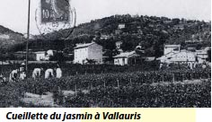
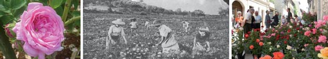

Le patrimoine vernaculaire - les cultures - Le jasmin, la rose de mai
De toutes les cultures de plantes à parfum de la Côte d’Azur, celle du jasmin fut longtemps la plus importante. Grasse, Mouans-Sartoux et Mougins en étaient les plus grands producteurs, mais Vallauris et Opio tiraient brillamment leur épingle du jeu (100 000 kilos de jasmin pour Vallauris, 40 000 pour Opio). La culture en était délicate, tout comme la cueillette qui s’effectuait uniquement à la main, dès le lever du jour. Une fois ramassées, les fleurs devaient être livrées à l’usine dans les 24h afin d’y être traitées, le tout pour une rétribution qui sera longtemps incertaine.
La fleur de jasmin pousse sur un arbuste appartenant à la famille des Oléacées, surtout cultivé en Inde, dont il est originaire, et en Égypte. Mais l’arbre s’est adapté en Europe méditerranéenne... Pour obtenir un kg d’essence absolue de jasmin, il faut recueillir environ 7 millions de fleurs ! Autant dire que le jasmin naturel est cher, réservé aux parfums de luxe, dont la plupart eux-mêmes préfèrent employer une version synthétique.

La très populaire rose de mai (rose centifolia) se cultivait dans plusieurs communes de la CASA (Biot, Villeneuve-Loubet, Saint-Paul), mais surtout à La Colle-sur-Loup ce qui lui valut le titre de «Capitale de la rose à parfum» (fête de la Rose de 1955 à 1962). En ce temps, chaque village avait sa spécificité. A la fi n du XIX, début du XXe siècle, la culture de la rose de mai était la base de l’économie colloise. Autour du village, c’était un véritable jardin, des hectares et des hectares de roses... Avant 1940, il y avait 700 producteurs pour environ 1 200 habitants à La Colle. Dès les années 1960, les producteurs rencontrèrent des difficultés avec l’urbanisation naissante et la concurrence internationale. Dans les années 1980, la culture de la rose périclita.
Production et cueillette : Les producteurs «défonçaient» le terrain à la main, puis ils plantaient. Après les années 1950, on mettait plutôt des plans greffés (même formule que pour la vigne). La mécanisation se libéralisant, la production était alors beaucoup plus importante. La cueillette des roses (récolte aux mois d’avril, mai et juin) se faisait trais tôt le matin, avec la rosée. La récolte était portée à la salle des roses. On les pesait, puis les emballait dans des sacs de 20 ou 30 kg et un secrétaire notait le poids brut (avec le sac) et le poids net. Les ramasseurs, que l’on nommait commissionnaires, préparaient les roses pour les envoyer à Grasse, aux parfumeries.
La fête de la rose (1955 - 1962) : C’était une grande organisation, qui attirait aussi les vedettes d’Hollywood ! Sur la place de la mairie, un canon projetait des pétales de roses. Les difficultés de production se faisant ressentir, la fête de la rose disparut.
La coopérative : En 1907, les producteurs de roses se sont réunis en une coopérative qui défendait leurs intérêts face aux industriels des parfumeries de Grasse. En 1990, la coopérative est dissoute ; elle donne alors ses biens à la commune. Le Maire décida de créer une association afin de maintenir le souvenir de cette époque colloise. En 1997 née l’association des anciens membres de la coopérative, plus communément appelée «Sei Colencs» ou association des anciens producteurs de plantes à parfum. La Journée autour de la Rose : Chaque année, au mois de Mai, la commune célèbre à nouveau son passé horticole avec la «Journée autour de la Rose».
